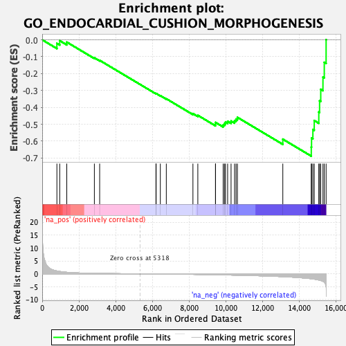
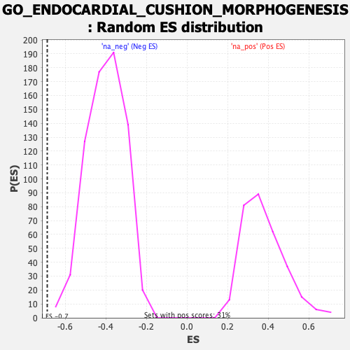

| | | Dataset | DE_genes |
| Phenotype | NoPhenotypeAvailable |
| Upregulated in class | na_neg |
| GeneSet | GO_ENDOCARDIAL_CUSHION_MORPHOGENESIS |
| Enrichment Score (ES) | -0.6885324 |
| Normalized Enrichment Score (NES) | -1.7162646 |
| Nominal p-value | 0.0 |
| FDR q-value | 0.087496534 |
| FWER p-Value | 0.518 |
Table: GSEA Results Summary

Fig 1: Enrichment plot: GO_ENDOCARDIAL_CUSHION_MORPHOGENESIS
Profile of the Running ES Score & Positions of GeneSet Members on the Rank Ordered List
| PROBE | GENE SYMBOL | GENE_TITLE | RANK IN GENE LIST | RANK METRIC SCORE | RUNNING ES | CORE ENRICHMENT | | 1 | BMP2 | | | 800 | 1.109 | -0.0210 | No |
| 2 | MSX2 | | | 954 | 0.920 | -0.0053 | No |
| 3 | SOX9 | | | 1338 | 0.594 | -0.0136 | No |
| 4 | MSX1 | | | 2841 | 0.157 | -0.1065 | No |
| 5 | ROBO1 | | | 3129 | 0.128 | -0.1215 | No |
| 6 | MDM2 | | | 6195 | -0.052 | -0.3186 | No |
| 7 | TWIST1 | | | 6205 | -0.053 | -0.3177 | No |
| 8 | BMPR1A | | | 6434 | -0.068 | -0.3306 | No |
| 9 | NOG | | | 6759 | -0.092 | -0.3490 | No |
| 10 | BMP7 | | | 8209 | -0.219 | -0.4367 | No |
| 11 | GATA5 | | | 8476 | -0.249 | -0.4471 | No |
| 12 | HEY2 | | | 9437 | -0.364 | -0.4991 | No |
| 13 | MDM4 | | | 9440 | -0.365 | -0.4891 | No |
| 14 | SNAI2 | | | 9856 | -0.425 | -0.5041 | No |
| 15 | TGFB2 | | | 9925 | -0.436 | -0.4964 | No |
| 16 | ROBO2 | | | 9981 | -0.444 | -0.4876 | No |
| 17 | SMAD4 | | | 10099 | -0.462 | -0.4824 | No |
| 18 | HEY1 | | | 10286 | -0.489 | -0.4808 | No |
| 19 | NOS3 | | | 10476 | -0.516 | -0.4787 | No |
| 20 | RBPJ | | | 10557 | -0.529 | -0.4692 | No |
| 21 | BMP5 | | | 10632 | -0.543 | -0.4589 | No |
| 22 | NOTCH1 | | | 13105 | -1.107 | -0.5882 | No |
| 23 | HEYL | | | 14655 | -1.923 | -0.6351 | Yes |
| 24 | TMEM100 | | | 14670 | -1.937 | -0.5821 | Yes |
| 25 | ACVR1 | | | 14743 | -2.010 | -0.5309 | Yes |
| 26 | TGFBR1 | | | 14816 | -2.076 | -0.4778 | Yes |
| 27 | SNAI1 | | | 15065 | -2.401 | -0.4271 | Yes |
| 28 | TGFBR2 | | | 15107 | -2.482 | -0.3607 | Yes |
| 29 | ENG | | | 15171 | -2.577 | -0.2932 | Yes |
| 30 | TBX2 | | | 15291 | -2.893 | -0.2204 | Yes |
| 31 | DCHS1 | | | 15363 | -3.297 | -0.1334 | Yes |
| 32 | ACVRL1 | | | 15463 | -5.045 | 0.0005 | Yes |
Table: GSEA details [plain text format]

Fig 2: GO_ENDOCARDIAL_CUSHION_MORPHOGENESIS: Random ES distribution
Gene set null distribution of ES for GO_ENDOCARDIAL_CUSHION_MORPHOGENESIS